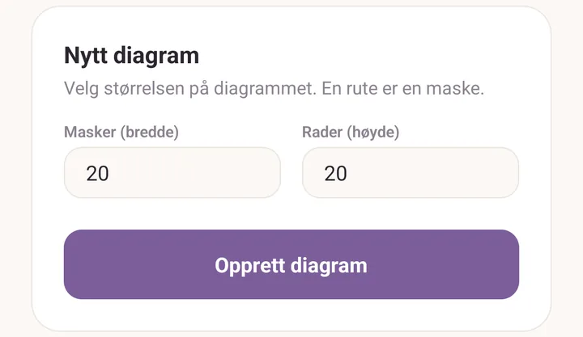
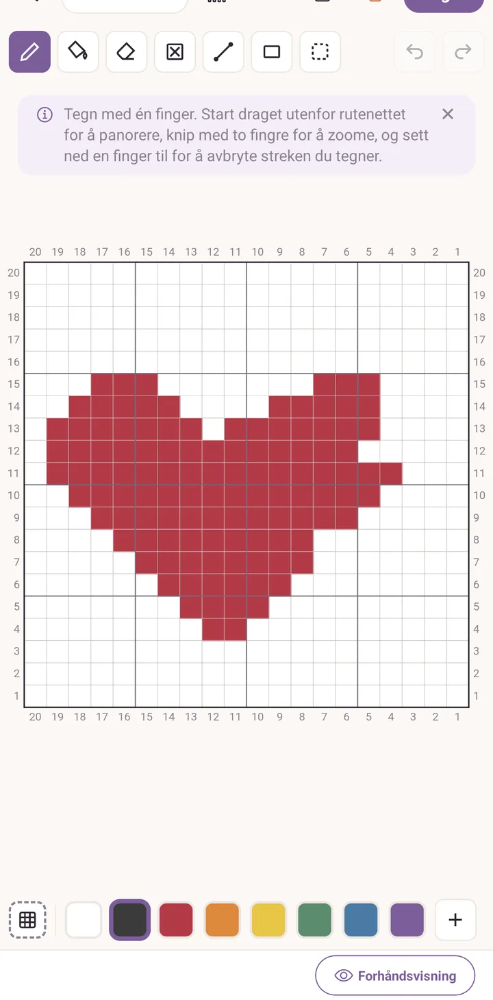
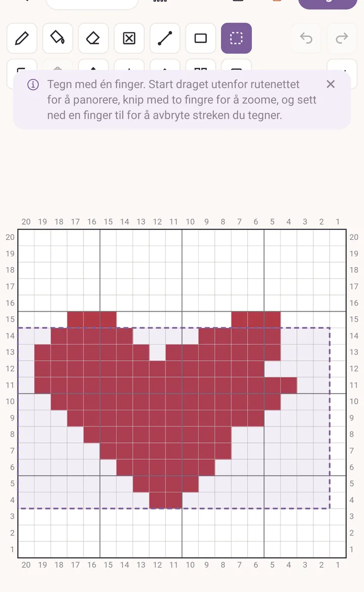
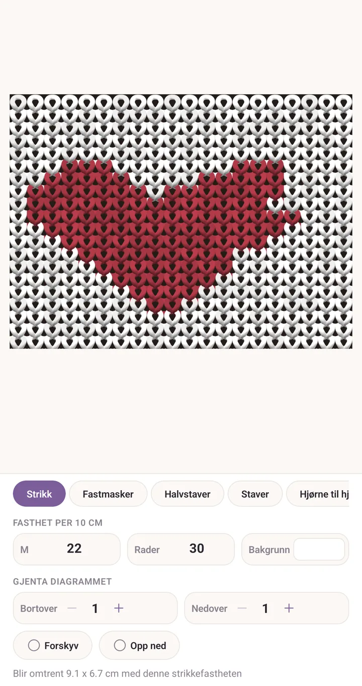
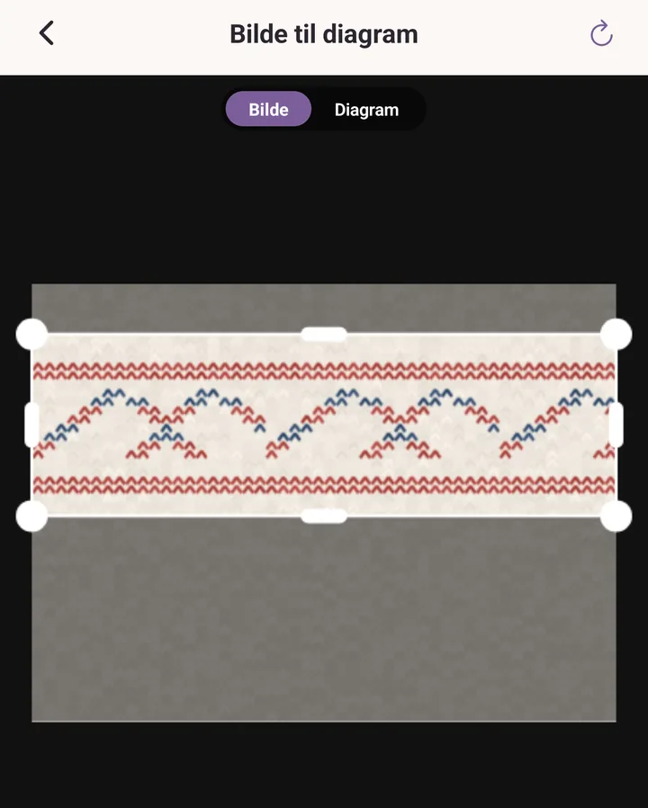
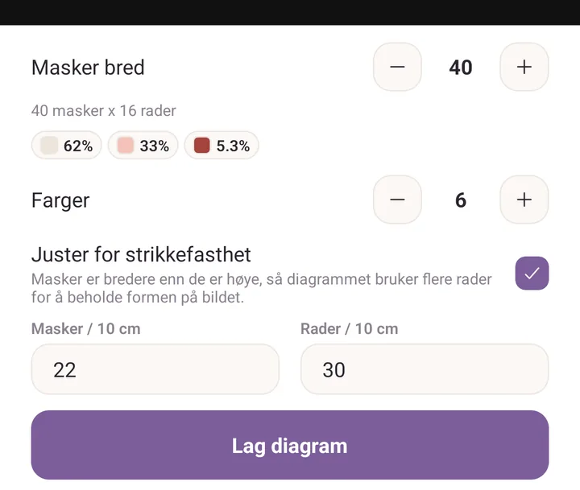

Lag et diagram
Når du er ferdig med dette, har du tegnet et flerfargediagram, sett det som strikket stoff, lagret det som PDF, og gjort et bilde om til et diagram nummer to.
Del én: tegn et diagram
- Trykk Mer, og så Diagramverksted.
- Trykk Nytt diagram.
- Skriv inn størrelsen. Prøv Masker (bredde) 20 og Rader (høyde) 20. Én rute er én maske.
- Trykk Opprett diagram.

- Trykk på en farge i stripen langs bunnen for å velge den.
- Tegn på rutenettet med én finger. Blyant er allerede valgt.
- For å dra, start draget utenfor rutenettet. For å zoome, knip. For å avbryte et strøk halvveis, sett ned en finger til.

- Trykk + i enden av fargestripen for å legge til en farge nummer to, og så Bruk denne fargen.
- Trykk Marker, dra en boks rundt motivet ditt, og trykk Gjenta for å kopiere det bortover og nedover. Ett trykk på Angre tar hele gjentakelsen tilbake hvis du ikke liker den.

- Trykk Forhåndsvisning under rutenettet.
- Skriv Fasthet per 10 cm inn i M og Rader. Linjen nederst sier nå hva stykket måler.
- Prøv utseendene 3D, 2D og Diagram, og trekk Gjenta diagrammet oppover for å se motivet lagt side om side.

- Gå tilbake, trykk på delingsikonet øverst og velg PDF. Det er utgaven du kan skrive ut, nummerert på alle fire kanter.

Del to: gjør et bilde om til et diagram
- Gå tilbake til Diagramverksted og trykk Fra et bilde.
- Trykk Ta et bilde eller Velg fra bildene.
- Dra i hjørnene av boksen for å ramme inn den delen du vil ha.

- Sett Masker bred. Linjen under forteller deg hvor mange rader det blir.
- Sett Farger. Start lavt, rundt fire til seks, og legg til flere bare hvis bildet trenger det.
- Slå på Juster for strikkefasthet og skriv inn Masker / 10 cm og Rader / 10 cm. Masker er bredere enn de er høye, så dette legger til rader for å beholde formen på bildet når det blir strikket.
- Trykk Diagram øverst for å se resultatet, og Bilde for å sammenligne.
- Trykk Lag diagram. Diagrammet lagres og åpnes i redigeringen, der du kan pusse på det for hånd.

Hvis det går galt
- Du malte et strøk du ikke mente å male. Sett ned en finger til før du løfter, så droppes strøket. Har du allerede løftet, trykk Angre.
- Rutenettet vil ikke flytte seg. Draget må begynne utenfor rutenettet. Et drag som begynner på en rute, maler i stedet.
- Bildediagrammet ser sammenpresset ut på skjermen. Det er Juster for strikkefasthet som gjør jobben sin. Diagrammet ser høyt ut fordi det strikkede resultatet ikke blir det.
Videre
- Diagramverksted: hvert verktøy, ingen maske, fargetellinger, og å følge et diagram mens du strikker.